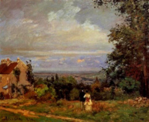

Gostaria de destacar alguns desenhos que foram do meu interrese e que particularmante são obras que ue gosto muito e queria compartilhar com vocês
Autorretrato (1887)
(Museu Van Gogh, Holanda) 
"Observando o céu pela janela antes do amanhecer, notei que estava límpido, nada além de uma estrela muito grande, que só poderia ser a Estrela d’Alva."A Noite Estrelada (1889) (Metropolitan Museum, New York)
Em 1869, Pissarro foi morar em Louveciennes, na margem do rio Sena. Em 1870, durante a guerra franco-prussiana, se refugiou em Londres. Doze pinturas a óleo datam desse período em Londres, entre elas, Landscape Near Louveci Landscape Near Louveci (1870)